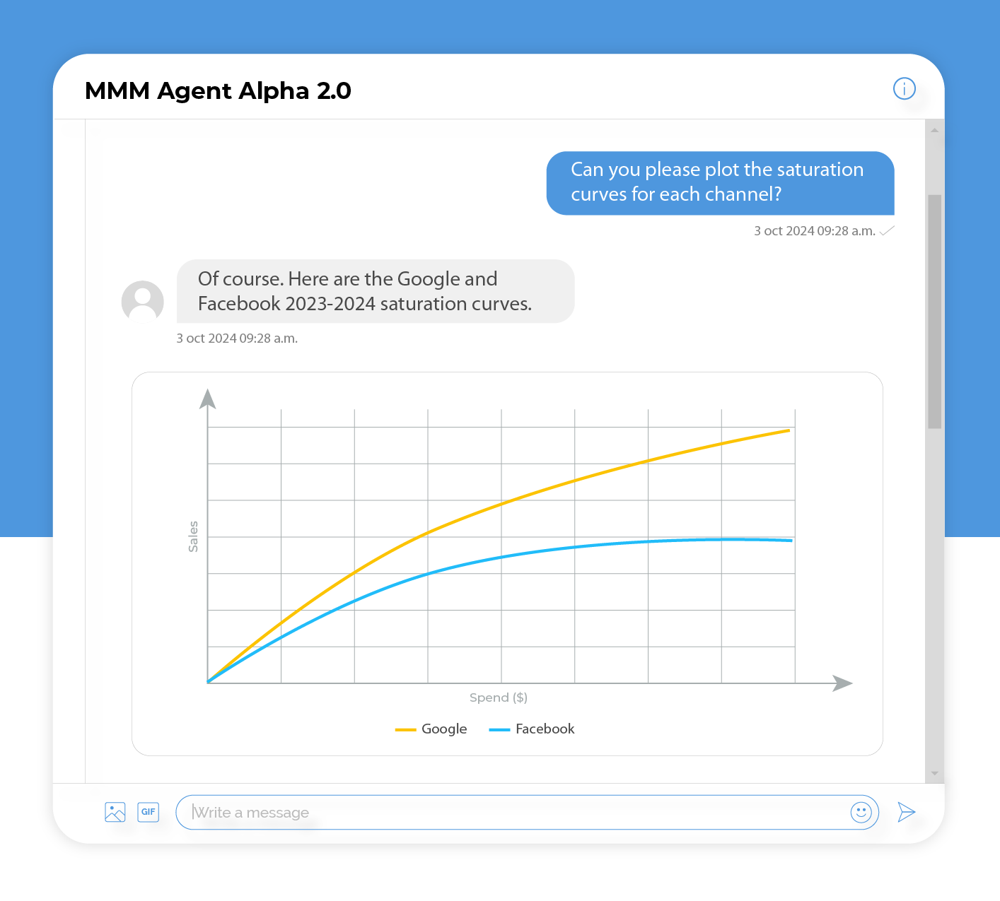
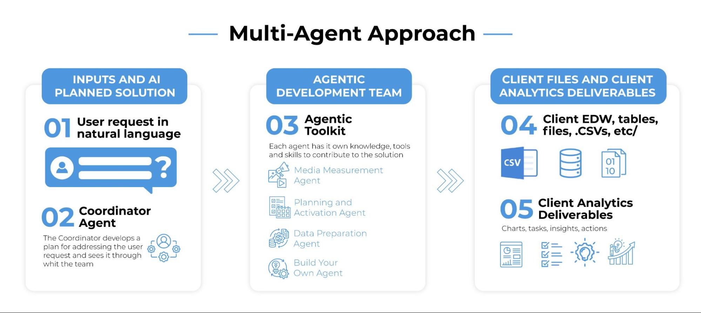

Abstract:
What if you could transform raw spend data into boardroom strategy in just one day? For CMOs, waiting months for marketing mix modeling (MMM) results is no longer an option. AI is revolutionizing the marketing analytics industry by dramatically accelerating the traditional modeling and insight workflow. In this post, we showcase an AI agent that automates PyMC-Marketing workflows—delivering MMM results in hours instead of months. Discover how it converts raw spend data into boardroom-ready strategy while balancing technical rigor with executive clarity.
Building a Bayesian marketing mix model today often feels like assembling a plane mid-flight. The process is fraught with obstacles that slow progress at every turn:
Data Prep Chaos: Teams frequently spend weeks merging siloed data—from sales and ads to promotions—while wrestling with discrepancies. Questions like, “Are these TikTok spend numbers from Q2 accurate?” or “Why does the CRM data conflict with GA4?” are common. These gaps and inconsistencies require experienced analysts to identify issues and implement painstaking manual fixes.
Model-Building Guesswork: Once the data is ready, the challenge shifts to model configuration. Data scientists grapple with decisions such as whether the adstock decay should be 30 or 45 days, or if saturation is best modeled using a Hill curve or an exponential function. This trial-and-error approach can involve testing over ten different configurations while battling issues like multicollinearity and the risk of overfitting.
Validation Black Holes: Even with a model in place, validation can become a black hole. When the MCMC sampling won’t converge, experts are left questioning whether the problem lies with the priors or the underlying spend data. Debugging often consumes more time than building the model itself.
Stale Insights Syndrome: By the time a model is fully built and validated, the market may have already moved on. In fact, industry reports have highlighted that the lengthy process involved in building and updating MMM can severely limit their impact and adoption.
Each of these phases requires time and expertise. In fact, you typically need a team of data scientists, analysts, and engineers to cover all these bases– talent that is expensive and in short supply.
In addition, this series of bottlenecks not only wastes valuable time and resources but also risks delivering outdated insights. This is where our AI MMM Agent steps in to transform the process.

The traditional MMM workflow demands specialized expertise and considerable time—but what if AI could do it all? Enter the AI agent, your MMM copilot that compresses weeks of work into mere hours. Leveraging the open-source PyMC-Marketing library from PyMC Labs, this agent automates the end-to-end process of building and running a Bayesian marketing mix model.
Key Capabilities of the AI Copilot
Guided data exploration: The agent assists in accessing and cleaning your data, suggesting tailored visualizations and diagnostics. Combining the expertise of an experienced data scientist with deep knowledge of your specific data context, it uncovers key descriptive insights that might otherwise be missed.
Smart model configuration: Based on your dataset and business context, the AI selects an optimal model structure. For example, if a long time series with underlying trends is detected, the agent enables a time-varying baseline. By harnessing PyMC-Marketing’s high-level API, it instantiates an MMM with the right components (carryover, saturation, seasonality) without the need for extensive manual coding.
Fast Bayesian inference: The agent fits the model to your data using PyMC’s efficient sampling methods. With optimizations like custom adstock calculations running in linear time and GPU sampling, the entire process is significantly faster than other implementations.
Automated insight delivery: The final output isn’t just a static presentation—it’s an interactive expert that translates complex posterior estimates into clear, actionable takeaways and visuals. For instance, it might output:
“Facebook ads drove an estimated 20% of sales with a 4.5× ROI last quarter. Consider shifting the budget from print to Facebook, which could boost overall ROI by X%.”
This immediacy and clarity let you bypass manual number-crunching and jump straight to strategy, while enabling live follow-up questions for further exploration.
By streamlining data preparation, model building, and interpretation, the AI agent dramatically shortens the time-to-insight. What once took months can now happen in real time—saving costs, reducing labor, and enabling frequent, up-to-date MMM analyses and follow up questions answered in minutes.
The AI agent isn’t a generic AutoML tool; it’s designed specifically for marketing mix modeling, with an emphasis on causal insights. Beyond speed, our AI agent also ensures the integrity of your insights by embedding causal reasoning into the model:
Causal structure awareness: To answer “what-if” questions, an MMM must capture causal relationships (not just correlations). The AI agent ensures the model includes appropriate control variables and reflects a causal DAG of your marketing ecosystem. For example, it will account for things like economic trends or competitor actions if those data are provided, so that channel effects are isolated. This causal design underpins reliable scenario planning (e.g., “If we cut email spend by 20%, we expect a 5% drop in sales”).
Experiment calibration (lift tests): The agent can incorporate results from lift test experiments directly into the modeling process. PyMC-Marketing allows you to add lift test measurements to an MMM before fitting. By calibrating the model with known incremental lift from experiments, the AI grounds the MMM in real-world cause-and-effect. This approach helps correct for unobserved confounding and biases in the observational data. In short, your MMM doesn’t exist in a vacuum – it aligns with any experimental evidence you have, leading to more trustworthy recommendations. For instance you could set prior in words such as “I believe the incremental CAC of facebook is between $150 and $200; is this data consistent with my belief?”
By acting as a sparring partner to intelligently configure these aspects, the AI agent delivers a robust Bayesian MMM that acts as a true causal decision tool—aligning statistical rigor with business reality to provide accurate, actionable insights.
What do marketers and executives stand to gain from this AI-accelerated approach? Here are the headline benefits:
For Data Scientists:
Dramatically Reduce Grunt Work:
By automating tedious tasks such as data validation, model configuration, and diagnostics, the AI agent cuts up to 80% of manual effort. This frees you up to concentrate on developing strategic insights rather than getting bogged down in the technical details.
Real-Time “What If?” Analysis: The agent lets you test scenarios on the fly. Imagine asking, “What happens if we double Amazon Ads during Prime Day?” and receiving instant, actionable feedback. This agility means you can adapt strategies as market conditions change—live and in real time.
For Executives:
Rapid Model Updates for Agile Budgeting: No more waiting months for model insights. With our AI-powered approach, you can update budgets weekly instead of quarterly, ensuring that your decisions are always based on the most current data.
Clarity, Not Jargon: Forget the technical details. The AI agent translates complex outputs into straightforward, boardroom-ready recommendations like, “Stop overspending on saturated channels—here’s your optimal mix.” This clarity empowers you to make confident, data-driven decisions without getting lost in the details.
In essence, AI-powered MMM transforms what used to be a complex analytical exercise into an ongoing strategic asset. Marketers gain granular insights to fine-tune campaigns, and executives receive a high-level expert assistant – not a dashboard! – that highlights what’s driving ROI. The result is better-performing marketing and a unified strategy for future investments.

Agentic workflows are revolutionizing industries—from marketing analytics to data science. At PyMC Labs, we’re at the forefront of this innovation, partnering with clients to develop tailored solutions that automate complex analytics workflows. Although the MMM agent can be used as an off-the-shelf solution, it can also be integrated with other agents to automate end-to-end business processes. For instance, the MMM agent can work alongside an inventory management agent that oversees order processing or a sales promotion agent that optimizes the mix of marketing, pricing, and inventory to maximize ROI—all while managing campaign execution.
An AI-powered MMM shortcut might be the game-changer your team needs. Contact us today to access this cutting-edge solution and start making data-driven marketing decisions faster and smarter.
If you are interested in seeing what we at PyMC Labs can do for you, then please email info@pymc-labs.com. We work with companies at a variety of scales and with varying levels of existing modeling capacity. We also run corporate workshop training events and can provide sessions ranging from introduction to Bayes to more advanced topics.